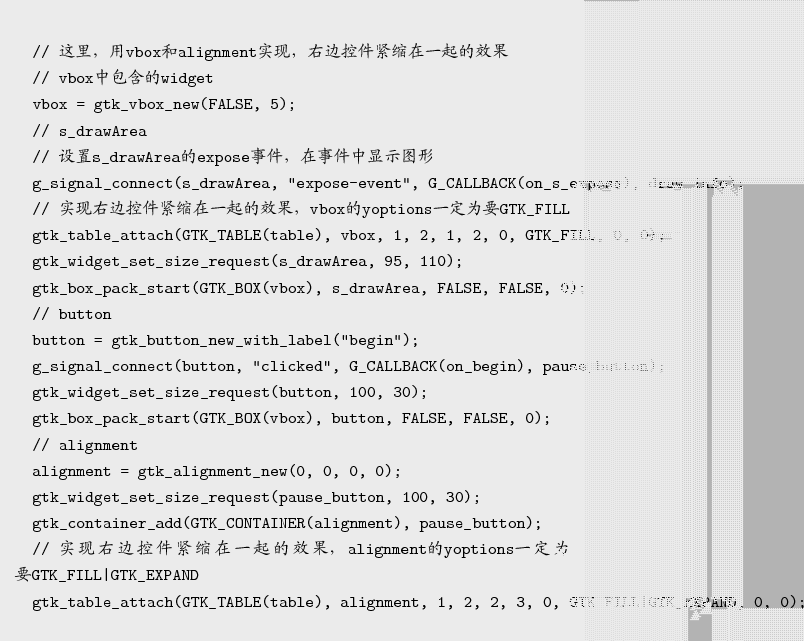

Next: Diamond类 Up: 游戏的结构 Previous: 游戏的结构 Contents
主程序中绘制程序界面，实现事件回调函数；在expose-event事件中调 用gdk_draw_drawable，把内存图形显示到绘图区域；在key-press-event事件中调 用Mass类的russian_mass_leftMove、russian_mass_rightMove等方法响应上下左右按键操 作；在定时事件中调用DataBase类和Mass类的方法，实现俄罗斯方块的定时下落。
主程序中界面由运行区、后备区、开始按键、暂停按键组成，方块毎隔500mS下落一行；程序
中用table布局，界面为左右结构左边是运行区，右边是后备区、开始按键、暂停按键，参
见 页图1；运行区显示的是当前的形状，后备
区中显示将要在运行的形状，如当前形状下落到底，后备形状就成为当前形状，后备区随机
生成一个后备形状；程序中后备区和开始按键放入GtkVBox控件中，用vbox和alignment实
现，右边控件紧缩在一起的效果，下面的一段程序：
页图1；运行区显示的是当前的形状，后备
区中显示将要在运行的形状，如当前形状下落到底，后备形状就成为当前形状，后备区随机
生成一个后备形状；程序中后备区和开始按键放入GtkVBox控件中，用vbox和alignment实
现，右边控件紧缩在一起的效果，下面的一段程序：
0.9

1.0
软件用键盘控制运行区的形状，形状可以左移、右移、下移、变形，分别用键盘的左、右、 下、上控制，软件还支持emacs操作方式，左移(C-b)，右移(C-f)，下移(C-n)，变形 (C-p)，直接移到最左边(C-a)，直接移到最右边(C-e)。